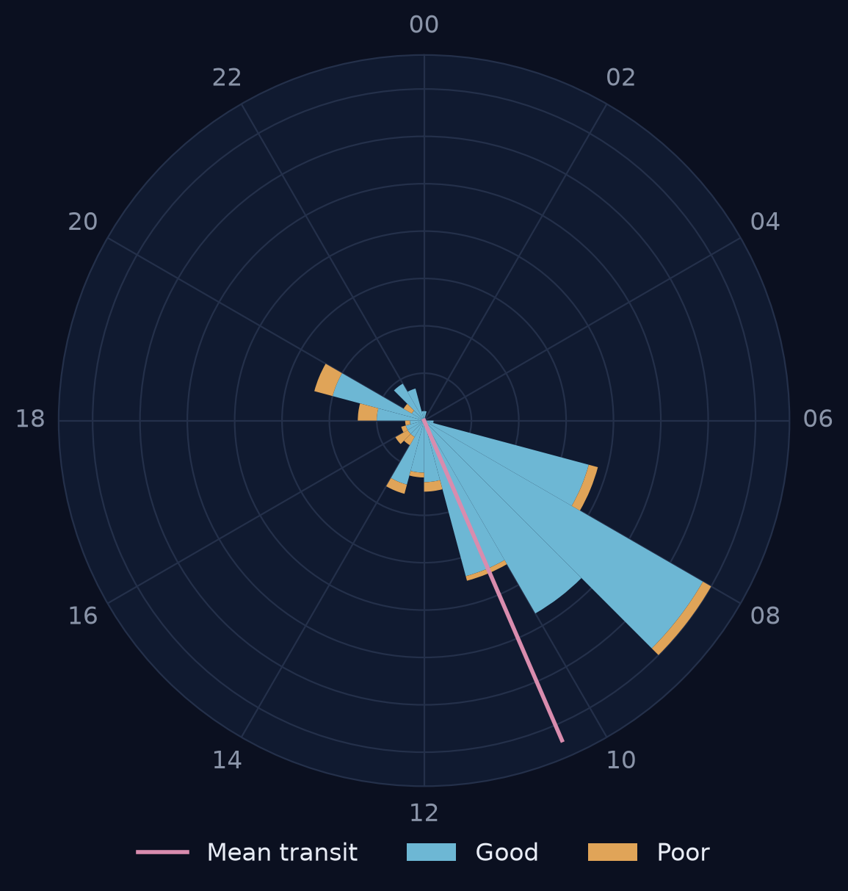
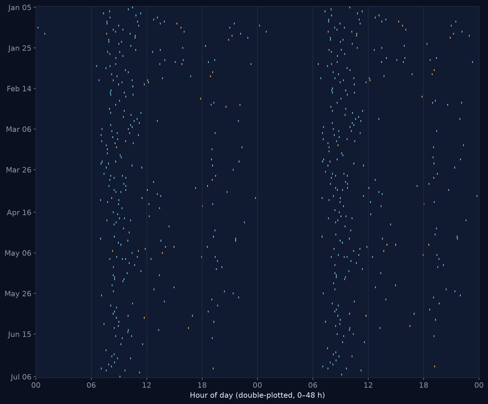
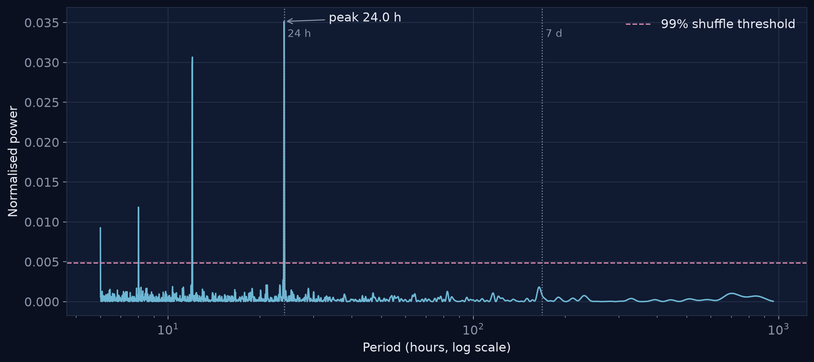
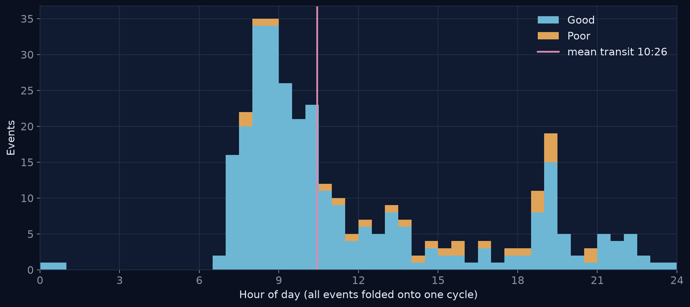
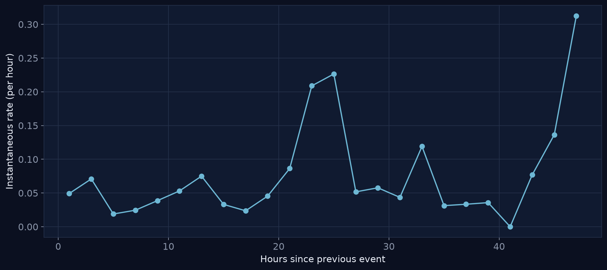
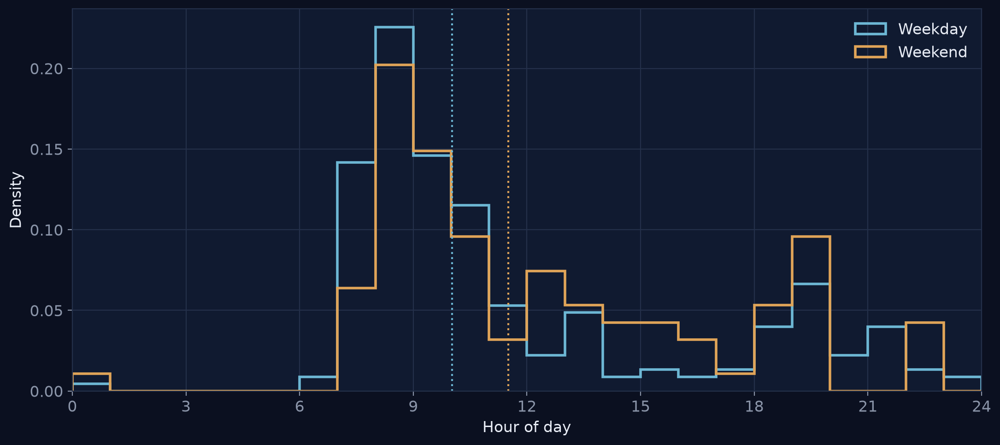
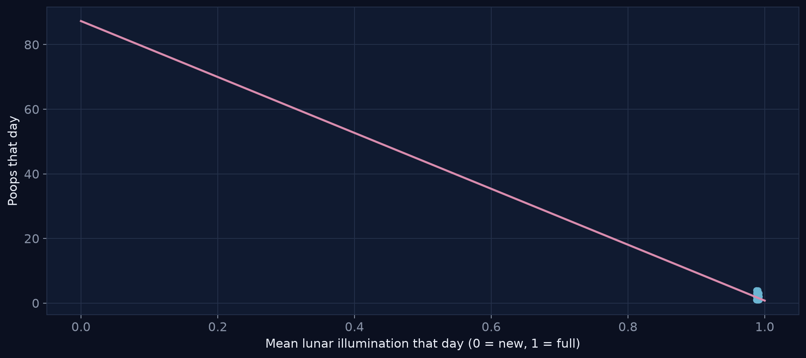

Observation report · circadian bowel periodicity
We treat a single subject's defecation log as an irregularly sampled periodic signal and recover its rhythm using standard methods from chronobiology and time-domain astronomy. A circadian (24-hour) component dominates; weekend phase and lunar illumination are tested and reported as found. Companion frequency dashboard: index.
A note on terms, borrowed from astronomy: transit = a typical event's time of day · meridian = the average of those times · ephemeris = the predicted time of the next one · phase = where in the 24-hour cycle something falls.
275
events logged183
days observed10:22
typical time of day±4.4
day-to-day spread (h)24.0
cycle length (h)detected
p = 0.005~10:22
predicted timer=-0.18
p = 0.017Rhythm

Signal

Signal

Signal

Timing

Timing

Controls

Periodogram. Events are binned into hourly counts and analysed with a Lomb-Scargle periodogram. Significance is a permutation test: the count series is shuffled 200 times and the tallest peak recorded; the dashed line is the 99th percentile of that null (p = 0.005 for the observed peak).
Actogram. Each row is one day, double-plotted across 48 hours so consecutive days sit side by side. A phase-locked rhythm forms a vertical band; drift or a schedule shift tilts it.
Weekend phase. Circular means of weekday vs. weekend transit times, compared by permuting the labels 2000 times (p = 0.002).
Lunar test. Mean lunar illumination per day (synodic-month model) correlated with daily count. Pearson r = -0.185 (p = 0.017).
Phase scatter is the circular standard deviation. The ephemeris projects the next transit from the circular mean and its scatter.